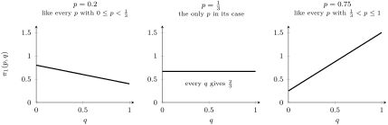
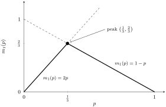

Section 5.4 Maximins and Two-Player Zero-Sum Games
Later on this page, we’ll introduce zero-sum games. But first, we’ll work out what a “maximin” is. It turns out to have an important connection to zero-sum games and their Nash equilibria.
We’ll go through maximins here in the notes first. The same material is also in the book, and you’ll skim through it in the first reading block later on this page.
Suppose Player 1 commits to a strategy \(\sigma_1\text{.}\) What’s the worst that could happen to them? Player 2 could play anything, so we look at the smallest payoff Player 1 could get as we range over all of Player 2’s possible strategies \(\sigma_2\text{:}\)
\begin{equation*}
m_1(\sigma_1) = \min_{\sigma_2} \pi_1(\sigma_1, \sigma_2)
\end{equation*}
So if Player 1 plays \(\sigma_1\text{,}\) then \(m_1(\sigma_1)\) is the smallest possible payoff they can get.
Let’s try it on a small example. Here are Player 1’s payoffs for two of their strategies, Top and Bottom, against each of Player 2’s three pure strategies. (Only Player 1’s payoffs are shown.)
| Player 2 plays L | Player 2 plays M | Player 2 plays R | |
|---|---|---|---|
| Player 1 plays Top | \(3\) | \(-1\) | \(2\) |
| Player 1 plays Bottom | \(1\) | \(0\) | \(2\) |
Now suppose Player 1 is risk-averse, so they want to choose a strategy \(\sigma_1\) that makes the worst-case scenario as good as possible. More precisely, they want the \(\sigma_1\) with the largest \(m_1(\sigma_1)\text{.}\) That’s called a maximin strategy for Player 1, which we denote \(\sigma_1^\dagger\text{.}\) The corresponding maximin payoff is written \(m_1^\dagger\text{:}\)
\begin{equation*}
m_1^\dagger = m_1(\sigma_1^\dagger) = \max_{\sigma_1} m_1(\sigma_1)
= \max_{\sigma_1} \min_{\sigma_2} \pi_1(\sigma_1, \sigma_2)
\end{equation*}
By playing \(\sigma_1^\dagger\text{,}\) Player 1 guarantees themselves at least \(m_1^\dagger\) no matter what Player 2 does, and no other strategy guarantees them more.
Checkpoint 5.4.3.
Go back to the payoffs in Table 5.4.1. You found \(m_1(\text{Top}) = -1\) and \(m_1(\text{Bottom}) = 0\text{.}\) If Player 1 is choosing between Top and Bottom, what is their maximin strategy, and what is their maximin payoff?
-
Top, with maximin payoff \(3\)
-
\(3\) is Top’s best case. A maximin strategy compares worst cases: \(m_1(\text{Top}) = -1\) and \(m_1(\text{Bottom}) = 0\text{.}\)
-
Top, with maximin payoff \(-1\)
-
Top’s worst case is \(-1\text{,}\) but Bottom’s worst case is better. The maximin strategy is the one with the largest worst case.
-
Bottom, with maximin payoff \(0\)
-
Correct. Bottom’s worst case (\(0\)) beats Top’s (\(-1\)), so by playing Bottom, Player 1 guarantees at least \(0\text{.}\) Could a mix of Top and Bottom do even better? Not here: against M, any mix earns at most \(0\text{,}\) since Top gets \(-1\) and Bottom gets \(0\) there.
-
Bottom, with maximin payoff \(2\)
-
Bottom is the right strategy, but \(2\) is its best case. The maximin payoff is the worst case of the maximin strategy.
We can define the same things for Player 2: her worst case \(m_2(\sigma_2)\) for each strategy \(\sigma_2\text{,}\) her maximin strategy \(\sigma_2^\dagger\text{,}\) and her maximin payoff \(m_2^\dagger\text{.}\) Before you look at the book’s version, see if you can figure out what the formula should be.
Checkpoint 5.4.4.
Build the formula for Player 2’s maximin payoff \(m_2^\dagger\) by putting the blocks in order. Not every block belongs! (The blocks can’t show typeset math, so
max_σ₂ stands for \(\displaystyle\max_{\sigma_2}\text{,}\) and so on.)
Finally, a strategy profile \((\sigma_1^\dagger, \sigma_2^\dagger)\) in which both players use maximin strategies is called a maximin equilibrium. In a maximin equilibrium, each player gets at least their maximin payoff \(m_i^\dagger\text{.}\)
Let’s find the maximin equilibrium for a game we already know, the Battle of the Sexes from Section 3.2.4. Alice and Bob each choose between a concert and a wrestling match. Here’s the payoff matrix with their probabilities in the margins.
| Bob | ||||
|---|---|---|---|---|
| \(q\) | \({1-q}\) | |||
| concert | wrestling | |||
| Alice | \(p\) | concert | (2, 1) | (0, 0) |
| \({1-p}\) | wrestling | (0, 0) | (1, 2) | |
So Alice’s mixed strategy is \(\sigma_1 = p \cdot \text{concert} + (1-p) \cdot \text{wrestling}\text{,}\) and Bob’s is \(\sigma_2 = q \cdot \text{concert} + (1-q) \cdot \text{wrestling}\text{.}\) Like the book, we’ll write a strategy profile as \((p, q)\) instead of \((\sigma_1, \sigma_2)\text{.}\) Alice’s expected payoff is
\begin{equation*}
\pi_1(p, q) = 2 \cdot pq + 0 \cdot p(1-q) + 0 \cdot (1-p)q
+ 1 \cdot (1-p)(1-q),
\end{equation*}
which simplifies to
\begin{equation*}
\pi_1(p, q) = (1 - p) + (3p - 1)q.
\end{equation*}
Each fixed value of \(p\) corresponds to one of Alice’s strategies, \(\sigma_1 = p \cdot \text{concert} + (1-p) \cdot \text{wrestling}\text{.}\) So for each \(p\text{,}\) we can find Alice’s worst case:
\begin{equation*}
m_1(p) = \min_{0 \leq q \leq 1} \pi_1(p, q).
\end{equation*}
To find it, we hold \(p\) fixed and look for the \(q\) that minimizes \(\pi_1(p, q)\text{.}\) Differentiating with respect to \(q\text{:}\)
\begin{equation*}
\frac{\partial \pi_1}{\partial q} = 3p - 1, \quad\text{which is }
\begin{cases}
\text{negative} \amp \text{if } 0 \leq p \lt \frac{1}{3}, \\
0 \amp \text{if } p = \frac{1}{3}, \\
\text{positive} \amp \text{if } \frac{1}{3} \lt p \leq 1.
\end{cases}
\end{equation*}
For a fixed \(p\text{,}\) the graph of \(\pi_1(p, q)\) is a line in \(q\) with slope \(3p - 1\text{,}\) and the sign of that slope tells us where the line is lowest as \(q\) runs from \(0\) to \(1\text{.}\) Here are the graphs for one sample value of \(p\) from each of the three cases.

Three side-by-side graphs. Each has Bob’s probability q of going to the concert on the horizontal axis, from 0 to 1, and Alice’s expected payoff on the vertical axis, from 0 to 1.6.
Left graph, p equals 0.2, labeled as looking like every p that is at least 0 and less than one third: a straight line decreasing from 0.8 at q equals 0 down to 0.4 at q equals 1.
Middle graph, p equals one third, labeled as the only p in its case: a horizontal line at height two thirds. Every value of q gives the same payoff, two thirds.
Right graph, p equals 0.75, labeled as looking like every p that is greater than one third and at most 1: a straight line increasing from 0.25 at q equals 0 up to 1.5 at q equals 1.
Checkpoint 5.4.7.
The same reasoning works for every \(p\text{,}\) not just these three. If \(0 \leq p \lt \frac{1}{3}\text{,}\) the slope \(3p - 1\) is negative, so the line is lowest at \(q = 1\text{.}\) If \(\frac{1}{3} \lt p \leq 1\text{,}\) the slope is positive, so the line is lowest at \(q = 0\text{.}\) Putting the three cases together:
\begin{equation*}
m_1(p) = \min_{0 \leq q \leq 1} \pi_1(p, q) =
\begin{cases}
\pi_1(p, 1) \amp \text{if } 0 \leq p \lt \frac{1}{3}, \\
\text{any } \pi_1(p, q) \amp \text{if } p = \frac{1}{3}, \\
\pi_1(p, 0) \amp \text{if } \frac{1}{3} \lt p \leq 1.
\end{cases}
\end{equation*}
Now plug in. Using \(\pi_1(p, q) = (1 - p) + (3p - 1)q\text{,}\) we get \(\pi_1(p, 1) = 2p\) and \(\pi_1(p, 0) = 1 - p\text{,}\) and every \(\pi_1(\frac{1}{3}, q)\) equals \(\frac{2}{3}\text{.}\) So
\begin{equation*}
m_1(p) =
\begin{cases}
2p \amp \text{if } 0 \leq p \lt \frac{1}{3}, \\
\frac{2}{3} \amp \text{if } p = \frac{1}{3}, \\
1 - p \amp \text{if } \frac{1}{3} \lt p \leq 1.
\end{cases}
\end{equation*}
Here’s the graph of the piecewise function \(m_1(p)\text{:}\)

A graph with Alice’s probability p of going to the concert on the horizontal axis, from 0 to 1, and her worst-case payoff on the vertical axis, from 0 to 1.2. The horizontal axis is marked at 0, one third, and 1.
The solid graph of m1 of p is shaped like an upside-down V. From p equals 0 to p equals one third, it follows the line 2p, rising from 0 to two thirds. From p equals one third to p equals 1, it follows the line 1 minus p, falling from two thirds to 0. The peak, at the point one third, two thirds, is marked with a dot.
Dashed segments show the line 2p continuing upward past the peak and the line 1 minus p continuing upward to the left of the peak. In both cases the dashed part is above the solid graph, showing that m1 of p is always the lower of the two lines.
Remember, a maximin strategy is the one whose worst case is as good as possible. In other words, Alice’s maximin strategy \(p^\dagger\) is the value of \(p\) that makes \(m_1(p)\) as large as possible.
Checkpoint 5.4.9.
Using the graph, what is Alice’s maximin strategy \(p^\dagger\text{,}\) and what is her maximin payoff \(m_1^\dagger\text{?}\)
-
\(p^\dagger = 1\) and \(m_1^\dagger = 2\text{.}\)
-
The concert is Alice’s favorite, and \(2\) is her best possible payoff. But if she always goes to the concert, Bob could go to the wrestling match, and she’d get \(0\text{.}\) In fact \(m_1(1) = 0\text{,}\) the lowest point on the graph!
-
\(p^\dagger = \frac{1}{3}\) and \(m_1^\dagger = \frac{2}{3}\text{.}\)
-
Correct. The highest point of \(m_1(p)\) is the peak at \((\frac{1}{3}, \frac{2}{3})\text{.}\) By going to the concert with probability \(\frac{1}{3}\text{,}\) Alice guarantees herself an expected payoff of at least \(\frac{2}{3}\text{,}\) whatever Bob does.
-
\(p^\dagger = \frac{2}{3}\) and \(m_1^\dagger = \frac{1}{3}\text{.}\)
-
Read the peak off the graph again: the first coordinate is \(p^\dagger\) and the second is \(m_1^\dagger\text{.}\)
-
\(p^\dagger = 0\) and \(m_1^\dagger = 1\text{.}\)
-
If Alice always goes to the wrestling match, Bob could go to the concert, and she’d get \(0\text{.}\) So \(m_1(0) = 0\text{,}\) not \(1\text{.}\)
A similar calculation for Bob shows that his maximin strategy is \(q^\dagger = \frac{2}{3}\text{,}\) and his maximin payoff is \(m_2^\dagger = \frac{2}{3}\text{.}\) So \((p^\dagger, q^\dagger) = (\frac{1}{3}, \frac{2}{3})\) is a maximin equilibrium.
Now, this maximin equilibrium \((\frac{1}{3}, \frac{2}{3})\) is not a Nash equilibrium. (If you want, try to figure out why!) But there is a kind of game where maximin equilibria and Nash equilibria line up exactly, and that’s where we’re headed next.
A two-player game is zero-sum if the two players’ payoffs add up to \(0\) in every cell of the payoff matrix: whatever one player wins, the other loses. One-Card Two-Round Poker from the last section is an example. Here’s its payoff matrix again (the reduced game from Section 5.4):
| Player 2 | ||||
|---|---|---|---|---|
| \(bb\) | \(bf\) | \(f\) | ||
| Player 1 | \(bb\) | (\(0\text{,}\) \(0\)) | (\(4\text{,}\) \(-4\)) | (\(2\text{,}\) \(-2\)) |
| \(bf\) | (\(1\text{,}\) \(-1\)) | (\(0\text{,}\) \(0\)) | (\(2\text{,}\) \(-2\)) | |
| \(f\) | (\(2\text{,}\) \(-2\)) | (\(1\text{,}\) \(-1\)) | (\(0\text{,}\) \(0\)) | |
In every cell, Player 2’s payoff is exactly the negative of Player 1’s. For example, when Player 1 plays \(bb\) and Player 2 plays \(bf\text{,}\) Player 1 wins \(4\) and Player 2 loses \(4\text{.}\) That’s what makes poker zero-sum: every dollar one player wins comes out of the other player’s pocket. The Battle of the Sexes is not zero-sum. For example, in the cell \((2, 1)\text{,}\) the payoffs add up to \(2 + 1 = 3\text{.}\)
The definition only talks about the cells, which come from pure strategies. What about mixed strategies?
Checkpoint 5.4.11.
Suppose the payoffs add up to \(0\) in every cell of a game. Why do they also add up to \(0\) for any pair of mixed strategies?
-
Each player’s expected payoff is a weighted average of the cells, and both players use the same weights. So the two expected payoffs add up to a weighted average of the cell sums, which are all \(0\text{.}\)
-
Correct. If a cell has probability \(w\text{,}\) it contributes \(w \cdot (\text{Player 1's payoff})\) to \(\pi_1\) and \(w \cdot (\text{Player 2's payoff})\) to \(\pi_2\text{.}\) Adding them, that cell contributes \(w \cdot (\text{cell sum}) = w \cdot 0 = 0\) to \(\pi_1 + \pi_2\text{.}\) So \(\pi_1 + \pi_2 = 0\text{,}\) and \(\pi_2 = -\pi_1\) for mixed strategies too.
-
Because each player’s expected payoff is \(0\text{.}\)
-
Individual payoffs don’t have to be \(0\text{.}\) In poker, Player 1 can win \(4\) in a single cell. It’s the sum of the two players’ payoffs that’s always \(0\text{.}\)
-
It isn’t always true. It depends on which mixed strategies the players use.
-
It is always true! Think about how an expected payoff is built from the cells, and what the two players’ expected payoffs have in common.
Here’s one more consequence of the definition, which will turn out to be the key idea behind this section’s main theorem.
Checkpoint 5.4.12.
In a zero-sum game, suppose Player 1 keeps playing the same strategy \(\sigma_1\text{,}\) and Player 2 switches from \(\sigma_2\) to some other strategy \(\tau_2\text{.}\) Suppose that
\begin{equation*}
\pi_1(\sigma_1, \sigma_2) \gt \pi_1(\sigma_1, \tau_2).
\end{equation*}
In words: Player 1 does worse when Player 2 switches to \(\tau_2\text{.}\) Since the game is zero-sum, what else must be true?
-
\(\pi_2(\sigma_1, \sigma_2) \gt \pi_2(\sigma_1, \tau_2)\text{.}\) Player 2 also does worse by switching to \(\tau_2\text{.}\)
-
Zero-sum means \(\pi_2 = -\pi_1\) (for mixed strategies too, as we just saw). What happens to an inequality when you multiply both sides by \(-1\text{?}\)
-
\(\pi_2(\sigma_1, \sigma_2) \lt \pi_2(\sigma_1, \tau_2)\text{.}\) Player 2 does better by switching to \(\tau_2\text{.}\)
-
Correct. Since \(\pi_2 = -\pi_1\text{,}\) multiplying both sides by \(-1\) flips the inequality. Whatever Player 1 loses, Player 2 gains. Keep this in mind for the proof later on this page.
In a zero-sum game, it turns out that maximin equilibria and Nash equilibria are exactly the same thing. That’s the main theorem of this section.
Section 5.5, Through Theorem 5.6.
Read Section 5.5 from the beginning through the statement of Theorem 5.6. Stop right before the proof.
Everything before the theorem is what we just worked through, so you can read that part quickly. You’ll see the book’s notation for everything we did: \(\sigma_1^\dagger\text{,}\) \(m_1^\dagger\text{,}\) and the Battle of the Sexes written in terms of \((p, q)\text{.}\) Read the statement of Theorem 5.6 carefully, and then we’ll break down why it’s true.
Let’s see why the theorem is true, at least the main part of it. We’ll work through it in the activity below.
Activity 5.4.1. Why Theorem 5.6 Is True.
Suppose \((\sigma_1^*, \sigma_2^*)\) is a Nash equilibrium of a two-player zero-sum game. We’ll show that Player 1’s payoff there is their maximin payoff:
\begin{equation*}
\pi_1(\sigma_1^*, \sigma_2^*) = m_1^\dagger.
\end{equation*}
We’ll do this in two steps: first we’ll show \(\pi_1(\sigma_1^*, \sigma_2^*) \geq m_1^\dagger\text{,}\) and then we’ll show \(\pi_1(\sigma_1^*, \sigma_2^*) \leq m_1^\dagger\text{.}\)
(a) Step 1: Show \(\pi_1(\sigma_1^*, \sigma_2^*) \geq m_1^\dagger\).
Take any strategy \(\sigma_1\) for Player 1, and compare these three payoffs:
-
\(\pi_1(\sigma_1^*, \sigma_2^*)\text{:}\) Player 1’s payoff at the Nash equilibrium.
-
\(\pi_1(\sigma_1, \sigma_2^*)\text{:}\) what Player 1 would get by switching to \(\sigma_1\) while Player 2 sticks with \(\sigma_2^*\text{.}\)
(i)
Which chain of inequalities is correct?
-
\(\pi_1(\sigma_1^*, \sigma_2^*) \geq \pi_1(\sigma_1, \sigma_2^*) \geq m_1(\sigma_1)\)
-
Correct. The first inequality is because \((\sigma_1^*, \sigma_2^*)\) is a Nash equilibrium, so Player 1 can’t do better by switching to \(\sigma_1\text{.}\) The second is because \(m_1(\sigma_1)\) is the smallest payoff Player 1 can get from \(\sigma_1\text{,}\) so it’s no bigger than their payoff against \(\sigma_2^*\) in particular.
-
\(\pi_1(\sigma_1, \sigma_2^*) \geq \pi_1(\sigma_1^*, \sigma_2^*) \geq m_1(\sigma_1)\)
-
The first inequality would mean Player 1 does better by switching to \(\sigma_1\text{.}\) What does the definition of a Nash equilibrium say about that?
-
\(\pi_1(\sigma_1^*, \sigma_2^*) \geq m_1(\sigma_1) \geq \pi_1(\sigma_1, \sigma_2^*)\)
-
\(m_1(\sigma_1)\) is the smallest payoff Player 1 can get from \(\sigma_1\text{,}\) so it can’t be bigger than \(\pi_1(\sigma_1, \sigma_2^*)\text{.}\)
So \(\pi_1(\sigma_1^*, \sigma_2^*) \geq \pi_1(\sigma_1, \sigma_2^*)
\geq m_1(\sigma_1)\text{.}\) Since \(\sigma_1\) was arbitrary, \(\pi_1(\sigma_1^*, \sigma_2^*)\) is at least as big as every \(m_1(\sigma_1)\text{.}\) So it’s at least as big as the largest one:
\begin{equation*}
\pi_1(\sigma_1^*, \sigma_2^*) \geq \max_{\sigma_1} m_1(\sigma_1)
= m_1^\dagger.
\end{equation*}
Notice we haven’t used the fact that the game is zero-sum yet!
(b) Step 2: Show \(\pi_1(\sigma_1^*, \sigma_2^*) \leq m_1^\dagger\).
This is the step where zero-sum matters. Suppose Player 1 keeps playing \(\sigma_1^*\text{,}\) but Player 2 switches to some other strategy \(\sigma_2\text{,}\) and Player 1 does worse:
\begin{equation*}
\pi_1(\sigma_1^*, \sigma_2^*) \gt \pi_1(\sigma_1^*, \sigma_2).
\end{equation*}
(i)
This is exactly the situation from Checkpoint 5.4.12, before the reading: Player 1 keeps the same strategy (\(\sigma_1^*\)), and Player 2 switches from \(\sigma_2^*\) to \(\sigma_2\text{.}\) Using what you found there, what must be true?
-
\(\pi_2(\sigma_1^*, \sigma_2^*) \gt \pi_2(\sigma_1^*, \sigma_2)\text{.}\) Player 2 also does worse by switching to \(\sigma_2\text{.}\)
-
Look back at Checkpoint 5.4.12. In a zero-sum game, when Player 1 does worse, what happens to Player 2?
-
\(\pi_2(\sigma_1^*, \sigma_2^*) \lt \pi_2(\sigma_1^*, \sigma_2)\text{.}\) Player 2 does better by switching to \(\sigma_2\text{.}\)
-
Correct. Whatever Player 1 loses, Player 2 gains. But \((\sigma_1^*, \sigma_2^*)\) is a Nash equilibrium, so Player 2 can’t do better by switching. That’s a contradiction, so this situation can never happen.
(ii)
Part (i) leads to a contradiction: Player 2 would do better by switching, but at a Nash equilibrium they can’t. So Player 1 can never do worse when Player 2 switches. In other words,
\begin{equation*}
\pi_1(\sigma_1^*, \sigma_2^*) \leq \pi_1(\sigma_1^*, \sigma_2)
\quad\text{for every } \sigma_2.
\end{equation*}
This is really the heart of the theorem: in a zero-sum game, Player 2’s best response is the move that hurts Player 1 the most. What can we conclude from this inequality?
-
\(\pi_1(\sigma_1^*, \sigma_2^*) = m_1^\dagger\)
-
That’s where we’re headed, but we’re not there yet. This inequality only compares payoffs where Player 1 plays \(\sigma_1^*\text{.}\) So it tells us about the worst case for \(\sigma_1^*\) specifically, \(m_1(\sigma_1^*)\text{,}\) not the best worst case over all strategies, \(m_1^\dagger\text{.}\)
-
\(\pi_1(\sigma_1^*, \sigma_2^*) \leq m_1(\sigma_1^*)\text{,}\) but not necessarily equal.
-
This is true, but we can say more. Is \(\pi_1(\sigma_1^*, \sigma_2^*)\) itself one of the payoffs Player 1 can get when they play \(\sigma_1^*\text{?}\)
-
\(\pi_1(\sigma_1^*, \sigma_2^*) = m_1(\sigma_1^*)\)
-
Correct. Among all the payoffs Player 1 can get by playing \(\sigma_1^*\text{,}\) \(\pi_1(\sigma_1^*, \sigma_2^*)\) is less than or equal to every one of them, and it’s one of them (the one where Player 2 plays \(\sigma_2^*\)). So it’s the smallest one, which is exactly \(m_1(\sigma_1^*)\text{.}\) In other words, \(\sigma_2^*\) is Player 1’s worst case.
To finish Step 2: \(m_1^\dagger\) is the largest of all the \(m_1(\sigma_1)\text{,}\) so in particular \(m_1(\sigma_1^*) \leq m_1^\dagger\text{.}\) Therefore
\begin{equation*}
\pi_1(\sigma_1^*, \sigma_2^*) = m_1(\sigma_1^*) \leq m_1^\dagger.
\end{equation*}
Putting it together.
Steps 1 and 2 together give
\begin{equation*}
\pi_1(\sigma_1^*, \sigma_2^*) = m_1(\sigma_1^*) = m_1^\dagger.
\end{equation*}
The same argument works for Player 2, so \(\pi_2(\sigma_1^*, \sigma_2^*) = m_2(\sigma_2^*) = m_2^\dagger\text{.}\) Here’s what that tells us:
-
Every Nash equilibrium is a maximin equilibrium. That’s half of part (1) of the theorem.
-
At the Nash equilibrium, each player gets their maximin payoff. That’s part (2).
-
Both maximin payoffs come from the same strategy profile \((\sigma_1^*, \sigma_2^*)\text{,}\) and the payoffs there add to \(0\) because the game is zero-sum. So \(m_1^\dagger + m_2^\dagger = 0\text{.}\) That’s part (3). (This also uses the fact that a Nash equilibrium exists in the first place, which Nash’s Existence Theorem, Theorem 5.1, guarantees.)
The other direction of part (1), that every maximin equilibrium is a Nash equilibrium, is also true. The book proves it using part (3), if you’re curious.
We’ll finish Section 5.5 on the next page, where we’ll see what Theorem 5.6 tells us about One-Card Two-Round Poker.